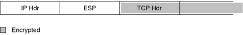
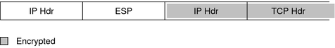

|
|||
|
1. Solaris TCPIP Protocol Suite (Overview) 2. Planning an IPv4 Addressing Scheme (Tasks 3. Planning an IPv6 Addressing Scheme (Overview) 4. Planning an IPv6 Network (Tasks) 5. Configuring TCP/IP Network Services and IPv4 Addressing (Tasks) 6. Administering Network Interfaces (Tasks) 7. Enabling IPv6 on a Network (Tasks) 8. Administering a TCP/IP Network (Tasks) 9. Troubleshooting Network Problems (Tasks) 10. TCP/IP and IPv4 in Depth (Reference) 12. About Solaris DHCP (Overview) 13. Planning for DHCP Service (Tasks) 14. Configuring the DHCP Service (Tasks) 15. Administering DHCP (Tasks) 16. Configuring and Administering DHCP Clients 17. Troubleshooting DHCP (Reference) 18. DHCP Commands and Files (Reference) 19. IP Security Architecture (Overview) Virtual Private Networks and IPsec Changes to IPsec for the Solaris 10 Release 21. IP Security Architecture (Reference) 22. Internet Key Exchange (Overview) 24. Internet Key Exchange (Reference) 25. Solaris IP Filter (Overview) 28. Administering Mobile IP (Tasks) 29. Mobile IP Files and Commands (Reference) 30. Introducing IPMP (Overview) 31. Administering IPMP (Tasks) Part VI IP Quality of Service (IPQoS) 32. Introducing IPQoS (Overview) 33. Planning for an IPQoS-Enabled Network (Tasks) 34. Creating the IPQoS Configuration File (Tasks) 35. Starting and Maintaining IPQoS (Tasks) 36. Using Flow Accounting and Statistics Gathering (Tasks) |
Transport and Tunnel Modes in IPsecThe IPsec standards define two distinct modes of IPsec operation, transport mode and tunnel mode. The modes do not affect the encoding of packets. The packets are protected by AH, ESP, or both in each mode. The modes differ in policy application when the inner packet is an IP packet.
In transport mode, the outer header, the next header, and any ports that the next header supports, can be used to determine IPsec policy. In effect, IPsec can enforce different transport mode policies between two IP addresses to the granularity of a single port. For example, if the next header is TCP, which supports ports, IPsec policy can be set for a TCP port of the outer IP address. Similarly, if the next header is an IP header, the outer header and the inner IP header can be used to determine IPsec policy. Tunnel mode works only on IP-in-IP datagrams. Tunneling in tunnel mode can be useful when computer workers at home are connecting to a central computer location. In tunnel mode, IPsec policy is enforced on the contents of the inner IP datagram. Different IPsec policies can be enforced for different inner IP addresses. That is, the inner IP header, its next header, and the ports that the next header supports, can enforce a policy. Unlike transport mode, in tunnel mode the outer IP header does not dictate the policy of its inner IP datagram. Therefore, in tunnel mode, IPsec policy can be specified for subnets of a LAN behind a router and can be specified for ports on those subnets. IPsec policy can also be specified for particular IP addresses, that is, hosts, on those subnets. The ports of those hosts can also have a specific IPsec policy. However, if a dynamic routing protocol is run over a tunnel, neither subnet selection nor address selection should be used, because the view of the network topology on the peer network could change. Changes would invalidate the static IPsec policy. For examples of tunneling procedures that include configuring static routes, see Protecting a VPN With IPsec. In Solaris, tunnel mode can be enforced only on an IP tunneling network interface. The ipsecconf command provides a tunnel keyword to select an IP tunneling network interface. When the tunnel keyword is present in a rule, all selectors that are specified in that rule apply to the inner packet. In transport mode, ESP, AH, or both ESP and AH, can protect the datagram. Figure 19-3 shows an IP header with an unprotected TCP packet. Figure 19-3 Unprotected IP Packet Carrying TCP InformationIn transport mode, ESP protects the data as shown in Figure 19-4. Figure 19-4 Protected IP Packet Carrying TCP InformationIn transport mode, AH protects the data as shown in Figure 19-5. Figure 19-5 Packet Protected by an Authentication HeaderAH actually covers the data before the data appears in the datagram. Consequently, the protection that is provided by AH, even in transport mode, covers some of the IP header. In tunnel mode, the entire datagram is inside the protection of an IPsec header. The datagram in Figure 19-3 is protected in tunnel mode by an outer IPsec header, and in this case ESP, as is shown in Figure 19-6. Figure 19-6 IPsec Packet Protected in Tunnel ModeThe ipsecconf command includes keywords to set tunnels in tunnel mode or in transport mode.
|
||
|